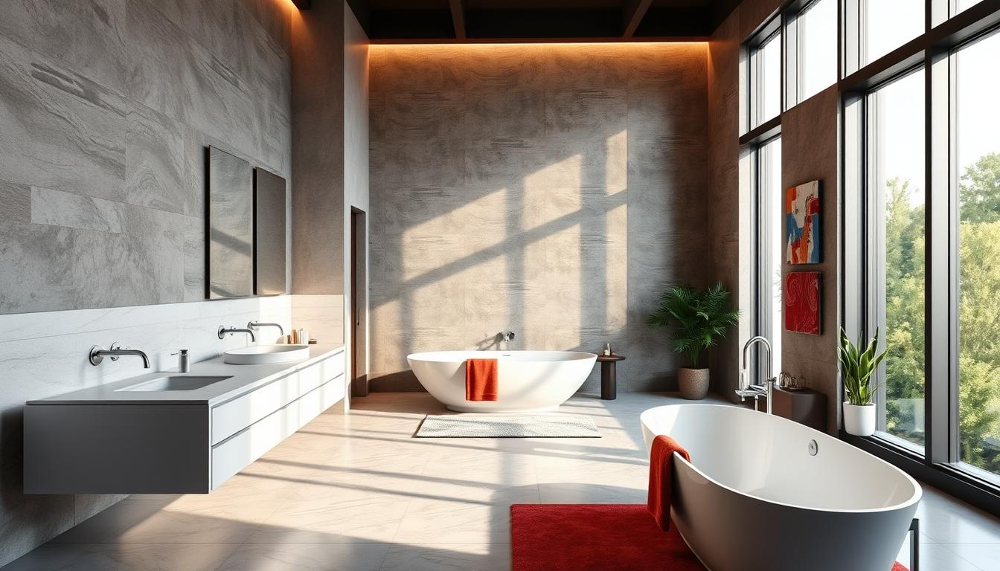

Who We Are
Founded in 2025, Bliss Renov is a South African bathroom renovation company passionate about creating beautiful, functional spaces that improve everyday living. Our mission is to transform ordinary bathrooms into personalised sanctuaries of comfort and style, and our vision is to become the most trusted bathroom renovation brand in South Africa by delivering excellence and creativity to every home. We are guided by our values of quality, using only the best materials and craftsmanship; innovation, offering modern, stylish, and practical solutions; trust, built through transparent pricing and honest communication; and customer-centricity, ensuring every project is designed around the unique needs of our clients.
Meet the Team
At Bliss Renov, our team is made up of highly skilled professionals who bring passion, expertise, and attention to detail to every project. From creative designers who help clients visualise their dream bathroom, to expert tilers and plumbers who ensure flawless installations, to project managers who oversee every step with precision, each member plays a vital role in delivering exceptional results. With years of combined experience in bathroom design, construction, and renovation, our team works collaboratively to provide innovative solutions that balance style, functionality, and durability. We believe in building strong relationships with our clients through open communication, professionalism, and a shared commitment to excellence. Every project we take on is not just about renovating a bathroom, but about creating a space that enhances comfort, increases value, and reflects the lifestyle of the people who use it.